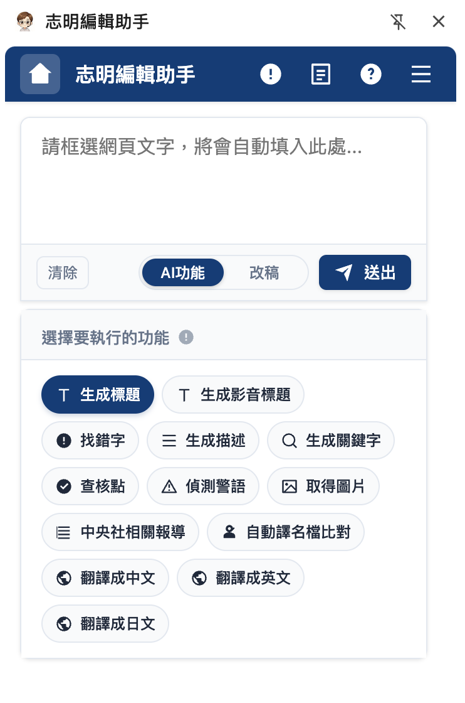
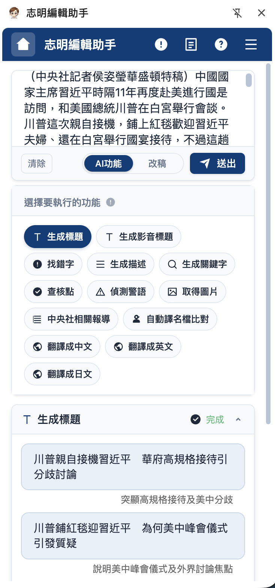
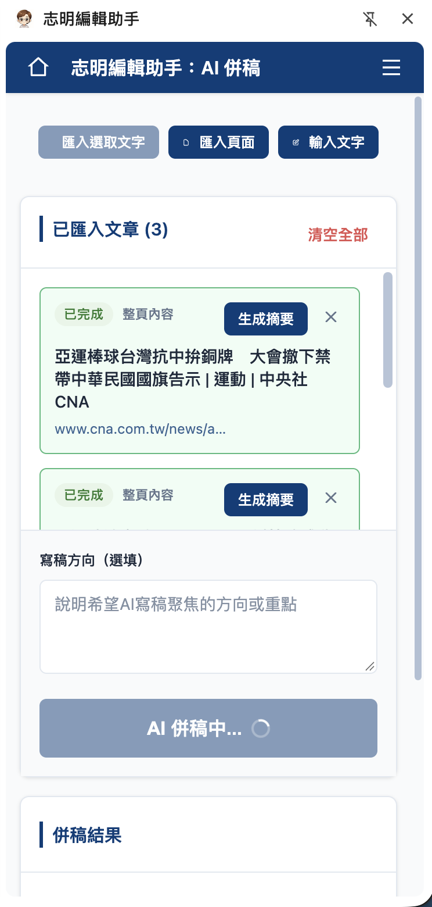
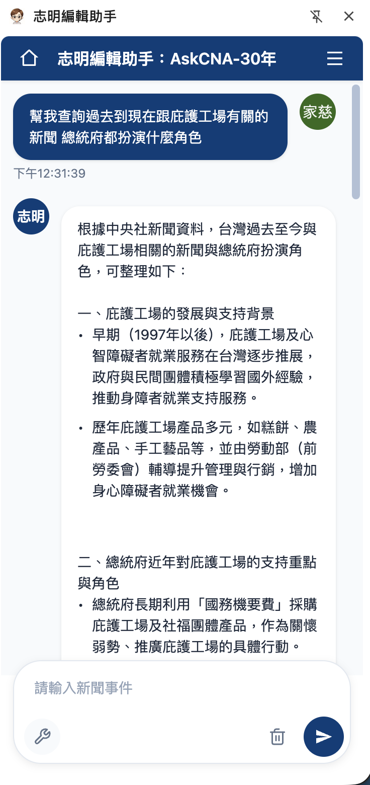

志明編輯助手：把 AI 放進編輯每天工作的地方Jiming Editor Assistant: AI inside the editor’s daily workflow
從 Chrome 側邊欄裡的八項 AI 功能開始，志明逐步加入輿情監測、AI 併稿與 AskCNA。編輯不必離開正在處理的新聞頁面，就能完成搜尋、下標、查核、改稿與整合素材。Jiming began as eight AI tools in a Chrome side panel, then grew to include trend monitoring, AI-assisted story merging and AskCNA. Editors can research, write headlines, verify, revise and combine material without leaving the story they are working on.
問題與起點Problem and starting point
編輯日常需要在發稿系統、搜尋、翻譯與多個 AI 網站之間切換，工具再多也可能因為進入成本太高而沒人使用。我選擇用 Chrome 擴充功能承接既有工作流程：框選網頁文字後，內容會直接帶入側邊欄，編輯可以立刻使用需要的功能。
Editors constantly move between the publishing system, search, translation and several AI sites. Even capable tools go unused when they interrupt the work. I used a Chrome extension to meet editors in their existing workflow: selecting text on a page sends it straight to the side panel, ready for the chosen task.

從單點工具到工作平台From individual tools to a newsroom platform
- AI 功能AI tools針對新聞文字提供標題、摘要、關鍵字、錯字與警語偵測、查核點、配圖及多語翻譯；結果保留多個候選，讓編輯選擇與修改。Headlines, summaries, keywords, typo and warning detection, verification points, image retrieval and translation; multiple candidates remain available for editors to choose and revise.
- 輿情監測Trend monitoring整理即時熱搜、每日新聞專題與同業焦點，讓編輯快速掌握正在升溫的題目。Surfaces live search trends, daily themes and coverage from other outlets so editors can quickly see which topics are gaining attention.
- AI 併稿AI story merging匯入多篇文章，先個別產生摘要，再依使用者指定的寫稿方向整合素材；每篇來源保留在流程中，方便回頭核對。Imports several stories, summarises each one, then combines the material around an editor’s chosen angle while keeping every source available for review.
- AskCNA把自然語言問題拆成搜尋步驟，查詢中央社歷史新聞後串流回答，並以時間碼與來源連結協助查證。Breaks a natural-language question into search steps, queries CNA’s archive and streams a sourced response with dates and links for verification.



我負責的工作My role
我獨立完成第一版產品，並持續參與需求釐清、介面與功能設計、Chrome Extension 開發、API 串接及上線後迭代。系統以 Manifest V3 side panel 與 content scripts 讀取使用者選取的頁面內容，透過 Google OAuth 與後端服務處理權限及 AI 請求。
I built the first version independently and continued across discovery, interaction and feature design, Chrome Extension development, API integration and post-launch iteration. A Manifest V3 side panel and content scripts capture selected page content, while Google OAuth and backend services handle access and AI requests.
功能示範Product demo
